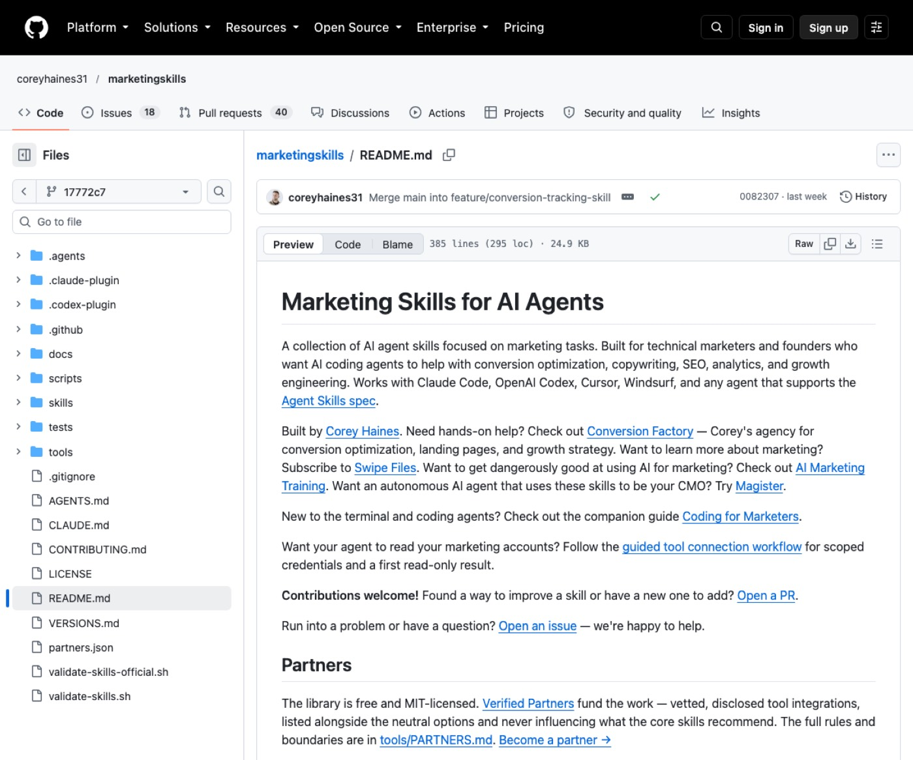
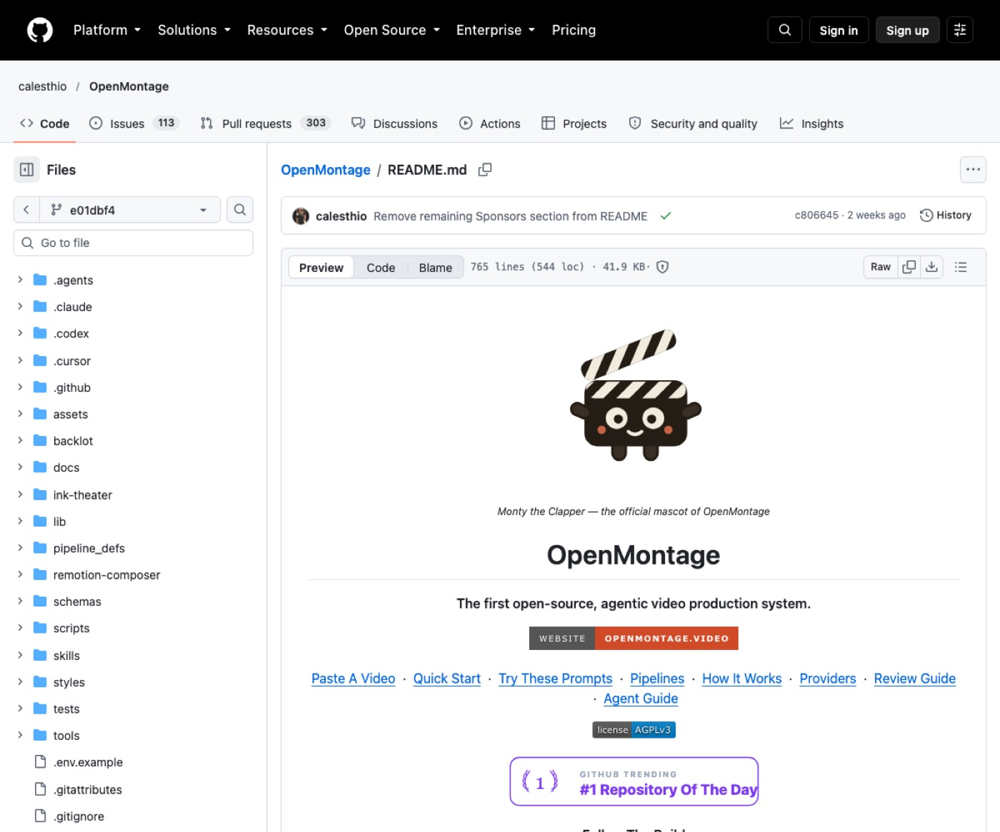
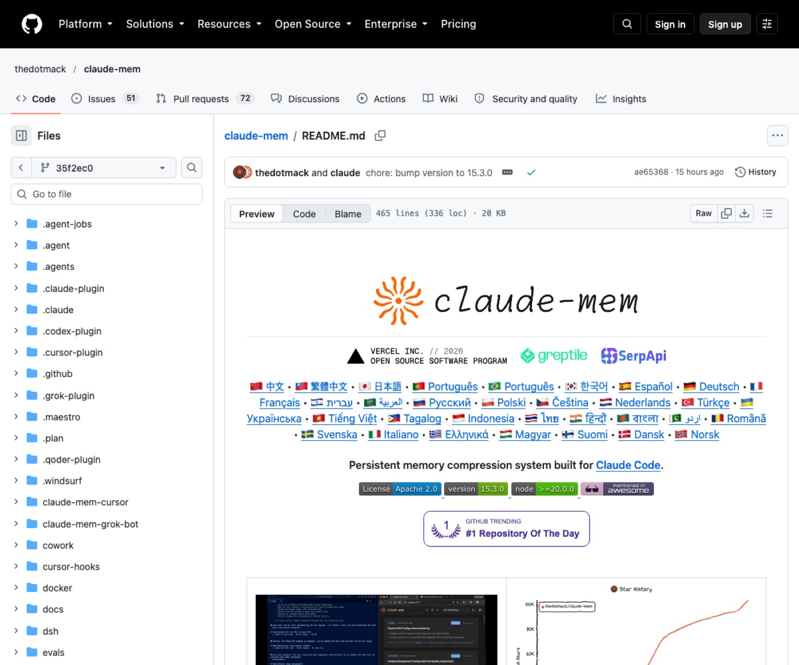
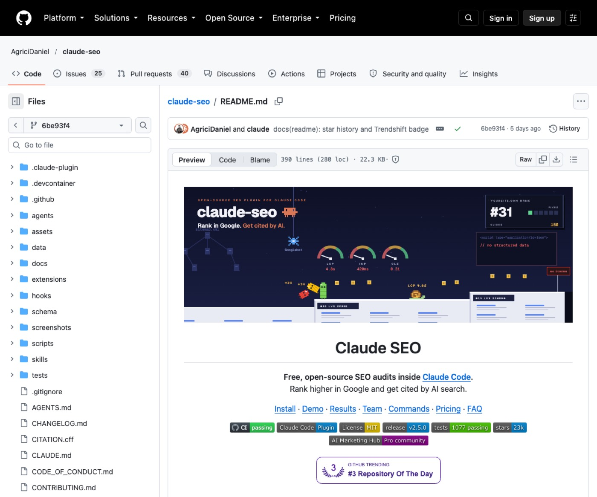
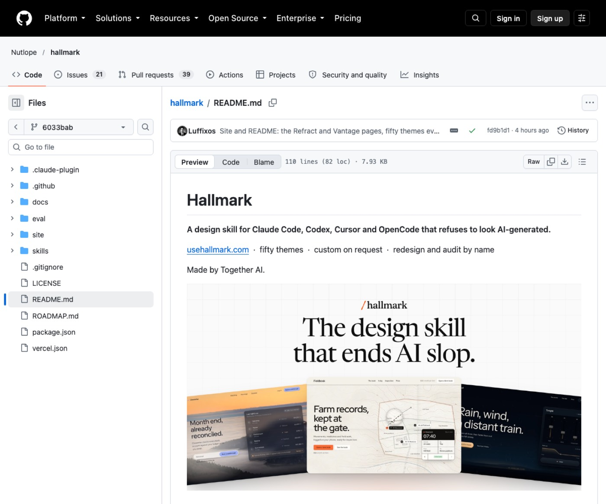

1. 시작 전 준비
- 컴퓨터에 Node.js와 Python 최신 환경을 설치해 두세요.
- 터미널에서 Claude Code가 정상 실행되는지 확인하세요.
- 연동할 서비스나 작업할 웹사이트 주소를 미리 정리하세요.
5위2. marketingskills (마케팅스킬)
제품 홍보와 전환율 개선이 필요한 1인 사업자에게 유용해요.
카피라이팅, 전환율 개선, 유료 광고 등 마케팅 전반의 프레임워크를 제공해요. 제품 정보 문서를 읽고 일관된 홍보 문구와 실행 전략을 세워줘요.

공식 문서 — coreyhaines31/marketingskills README 첫 화면
설치 (공식 문서 원문 그대로)
npx skills add coreyhaines31/marketingskills
쓰는 순서
- 터미널에서 npx skills 명령어로 도구를 설치하세요.
- 제품과 고객 정보를 담은 설명 문서를 준비하세요.
- 원하는 마케팅 작업 프롬프트를 에이전트에 입력하세요.
바로 쓰는 요청문
이 랜딩페이지 URL의 전환율을 분석하고 개선 포인트를 정리해 주세요.
[제품명] 신규 론칭을 위한 콜드 이메일 3단계 시퀀스를 작성해 주세요.
Google Ads 검색 광고에 쓸 헤드라인 5개와 설명문 3개를 뽑아 주세요.
새 버전 설치 시 이전 폴더가 남아있으면 충돌할 수 있으니 정리하세요.
4위3. OpenMontage (오픈몬타주)
혼자서 설명 영상이나 홍보 영상을 만들어야 하는 크리에이터에게 유용해요.
텍스트 요구나 참고 영상 분석을 바탕으로 기획부터 편집까지 진행해요. 무료 오픈소스 영상이나 생성 클립을 조합해 완성 MP4 파일을 만들어요.

공식 문서 — calesthio/OpenMontage README 첫 화면
설치 (공식 문서 원문 그대로)
git clone https://github.com/calesthio/OpenMontage.git
cd OpenMontage
make setup
쓰는 순서
- 저장소를 복제하고 make setup 명령어로 환경을 구성하세요.
- 필요한 경우 사용할 무료 또는 유료 미디어 키를 설정하세요.
- 원하는 영상 주제나 참고 영상 링크를 넣고 제작을 요청하세요.
바로 쓰는 요청문
이 유튜브 쇼츠의 호흡을 참고해서 [주제]에 대한 45초 쇼츠를 기획해 주세요.
실제 무료 아카이브 영상만 사용해서 [도시]의 밤을 다룬 60초 영상을 만들어 주세요.
[제품명] 론칭을 알리는 30초짜리 모션그래픽 홍보 영상을 제작해 주세요.
영상 편집 및 합성을 위해 FFmpeg와 Node.js 설치가 반드시 필요해요.
3위4. claude-mem (클로드멤)
긴 프로젝트를 진행하며 세션 간 작업 맥락을 유지하려는 실무자에게 유용해요.
세션 종료 후에도 작업 이력과 주요 결정을 자동으로 압축해 저장해요. 새로운 대화가 시작될 때 이전 맥락을 이어받아 끊김 없이 작업해요.

공식 문서 — thedotmack/claude-mem README 첫 화면
설치 (공식 문서 원문 그대로)
쓰는 순서
- 터미널에서 npx claude-mem install 명령어를 실행하세요.
- 안내에 따라 브라우저 로그인이나 설정을 완료하세요.
- 세션이 바뀌어도 이전 작업 기록을 바탕으로 대화를 이어가세요.
바로 쓰는 요청문
지난 세션에서 수정한 [기능명] 버그 수정 내역과 결정 사항을 찾아 주세요.
최근 3일간 진행한 프로젝트 작업 요약을 타임라인 순으로 보여 주세요.
이전 세션의 논의 맥락을 바탕으로 [작업명] 다음 단계를 이어서 진행해 주세요.
민감한 정보는 private 태그를 활용해 저장을 제외하세요.
2위5. claude-seo (클로드SEO)
웹사이트 검색 노출과 인공지능 인용을 늘리고 싶은 마케터에게 유용해요.
기술적 문제, 검색엔진 최적화, 인공지능 검색 인용 가능성을 점검해요. 분석 결과를 점수화해 우선순위가 적힌 개선 계획서로 정리해 줘요.

공식 문서 — AgriciDaniel/claude-seo README 첫 화면
설치 (공식 문서 원문 그대로)
/plugin marketplace add AgriciDaniel/claude-seo
/plugin install claude-seo@agricidaniel-claude-seo
/seo setup
쓰는 순서
- 플러그인을 등록하고 /seo setup 명령어로 실행 환경을 준비하세요.
- /seo doctor 명령어로 도구 동작 상태를 점검하세요.
- /seo audit 명령어 뒤에 사이트 주소를 넣어 전체 진단을 실행하세요.
바로 쓰는 요청문
/seo audit [https://example.com] 전체 사이트의 SEO 문제를 종합 진단해 주세요.
/seo geo [https://example.com] 사이트의 인공지능 검색 엔진 인용 가능성을 분석해 주세요.
/seo schema [https://example.com] 페이지에 누락된 구조화 데이터 마크업을 생성해 주세요.
전체 사이트 진단 시 복수 전문 에이전트가 동시에 실행되어 토큰 소모가 늘어나요.
1위6. hallmark (홀마크)
전형적인 인공지능 느낌을 벗어나 감각적인 웹페이지를 만들고 싶은 분에게 유용해요.
준비된 테마 자산을 바탕으로 목적에 맞게 페이지를 조립해요. 인공지능 특유의 흔적과 레이아웃 오류를 브라우저에서 자동 검수해요.

공식 문서 — Nutlope/hallmark README 첫 화면
설치 (공식 문서 원문 그대로)
npx skills add nutlope/hallmark -g
쓰는 순서
- npx skills 명령어로 전역 또는 프로젝트에 도구를 설치하세요.
- 원하는 페이지 목적과 필요한 실제 데이터를 준비하세요.
- 명령어를 입력하거나 프롬프트에 도구 이름을 지정해 실행하세요.
바로 쓰는 요청문
/hallmark [서비스명] 소개를 위한 랜딩페이지 초안을 Dusk 테마로 제작해 주세요.
/hallmark redesign ./src/app 기존 구조를 유지한 채 레이아웃과 스타일을 개선해 주세요.
/hallmark audit ./index.html 페이지 내 기계적 디자인 결함과 레이아웃을 점검해 주세요.
화면 렌더링 검수 기능을 쓰려면 Puppeteer와 크롬 브라우저가 필요해요.
7. 이어 쓰기 루틴
하나씩 따로 쓰기보다 이렇게 이어 쓰면 편해요.
| 사업 아이템과 웹사이트를 처음 만들 때 | hallmark로 페이지를 디자인하고 claude-seo로 검색 노출 준비를 점검해요. |
| 고객을 모으고 전환을 유도할 때 | marketingskills로 카피라이팅과 광고 문구를 다듬어 공개해요. |
| SNS 콘텐츠로 홍보를 넓힐 때 | OpenMontage로 설명 영상과 숏폼 클립을 빠르게 제작해요. |
| 매일 작업을 이어갈 때 | claude-mem으로 세션이 끊겨도 이전 기억을 살려 작업을 계속해요. |
8. 자주 묻는 질문
도구 설치 중에 오류가 발생하면 어떻게 하나요?
Node.js 버전과 필수 런타임이 설치되어 있는지 먼저 확인하세요. 문제가 지속되면 공식 문서의 설치 및 트러블슈팅 안내를 확인하세요.
유료 API 키가 없어도 모든 기능을 쓸 수 있나요?
기본 기능은 무료 환경이나 오픈소스 기반으로 동작해요. 고급 영상 생성이나 외부 지표 연동은 공식 문서에서 확인하세요.
Claude Code 환경이 아닌 곳에서도 동작하나요?
일부 도구는 Cursor나 OpenCode 같은 다른 에이전트도 지원해요. 각 도구별 지원 에이전트 목록은 공식 문서에서 확인하세요.
진단 결과나 기억된 내용은 어디에 저장되나요?
대부분의 데이터와 보고서는 사용자 로컬 컴퓨터에 파일로 저장돼요. 외부 유출 없이 내 컴퓨터에서 안전하게 관리할 수 있어요.
9. 함께 보면 좋은 것
영상엔 안 나왔지만 같이 뜨고 있는 20개예요. 눌러서 펼치세요.
개발 13개
skills ↗ 별 30.4만실전 개발 워크플로우를 보조해요
claude plugin install mattpocock-skills@claude-plugins-official
ponytail ↗ 별 17.7만코드를 군더더기 없이 줄여줘요
/plugin marketplace add DietrichGebert/ponytail
/plugin install ponytail@ponytail
ECC ↗ 별 29만엔지니어링 전 과정을 체계화해요
npx ecc-universal@2.2.3 setup
agent-skills ↗ 별 11.1만소프트웨어 품질과 검증을 도와요
/plugin marketplace add addyosmani/agent-skills
/plugin install agent-skills@addy-agent-skills
superpowers ↗ 별 30.6만요구사항 기획과 개발을 자동화해요
/plugin install superpowers@claude-plugins-official
ruflo ↗ 별 8만에이전트 런타임을 총괄 제어해요
/plugin marketplace add ruvnet/ruflo
/plugin install ruflo-core@ruflo
/plugin install ruflo-console@ruflo
security-audit-skill ↗ 별 4.9만코드의 보안 취약점을 자동으로 점검해요
npx skills add https://github.com/cloudflare/security-audit-skill \
--skill security-audit
tstack ↗ 별 1,618PR 작성부터 검토와 병합을 자동화해요
git clone https://github.com/t3dotgg/tstack
cp -R tstack/skills/* ~/.claude/skills/
andrej-karpathy-skills ↗ 별 22.5만카파시 지침으로 AI의 섣부른 추측과 과도한 복잡성을 방지해요
/plugin marketplace add forrestchang/andrej-karpathy-skills
/plugin install andrej-karpathy-skills@karpathy-skills
skills ↗ 별 3.7만다양한 에이전트 스킬을 탐색하고 터미널에서 즉시 설치해요
npx skills add vercel-labs/agent-skills
replica-skill ↗ 별 5,820기존 앱을 분석해 직접 복제 개발해 줘요
/plugin marketplace add Jakeschincariol/replica-skill
/plugin install replica-skill@replica-skill
기억·토큰 3개
graphify ↗ 별 13.6만프로젝트를 지식그래프로 엮어요
uv tool install graphifyy
graphify install
context-mode ↗ 별 3.2만샌드박스 실행으로 컨텍스트 토큰을 최대 98% 절약해요
/plugin marketplace add mksglu/context-mode
/plugin install context-mode@context-mode
fast-jev-compaction ↗ 별 7,779대화 압축 시 중요 기록 손실을 막아 줘요
claude plugin marketplace add tamaratran/fast-jev-compaction
claude plugin install fast-jev-compaction@fast-jev-compaction
업무 자동화 2개
knowledge-work-plugins ↗ 별 3.3만직무별 전문 업무 템플릿과 연동을 지원해요
claude plugin marketplace add anthropics/knowledge-work-plugins
claude plugin install sales@knowledge-work-plugins
ego-lite ↗ 별 2만브라우저 화면을 직접 보며 웹 작업을 처리해요
npx skills add citrolabs/ego-lite
영상·미디어 1개
video-shotcraft ↗ 별 1.4만제품 화면으로 모션 홍보 영상을 제작해 줘요
npx skills add Vincentwei1021/video-shotcraft
디자인 1개
logo-design-skill ↗ 별 4,739브랜드 맞춤형 로고와 가이드를 제작해 줘요
/plugin marketplace add kaankiziltug/logo-design-skill
/plugin install logo-design@logo-design-skill
10. 공식 링크
이 자료가 도움이 됐다면
매주 새 도구를 영상으로 고르고, 따라 하는 법은 여기에 쌓아요.